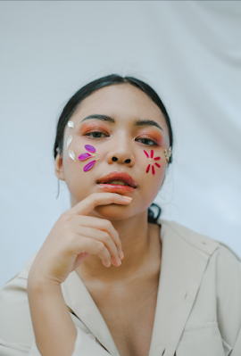

Sophie
Proudmoore

Привіт! Мене звати Софі.
Маю п’ять років досвіду роботи фотографом, кар’єрний шлях якого продемонстровано в провідних соціальних мережах світу. За час роботи ознайомилася з великою кількістю літературних та відео-матеріалів.
Нині працюю з відомими моделями, фотографії котрих додаються до журналу Vogue Ukraine, але вважаю, що на власні гарні світлини заслуговують абсолютно всі =)

 ⟶
Детально дізнатися про кар’єрне зростання можна тут!
⟶
Детально дізнатися про кар’єрне зростання можна тут!